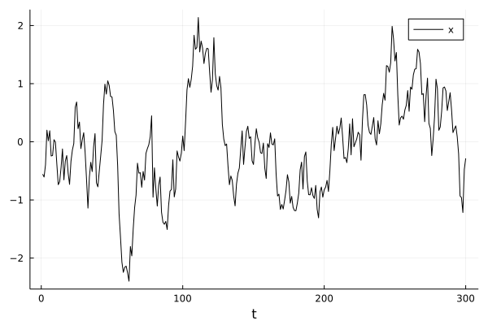
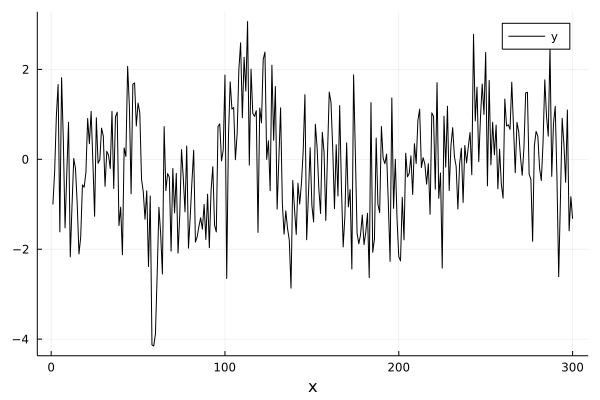
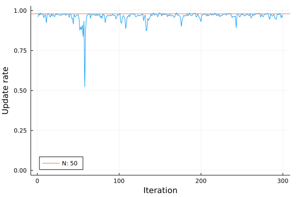

Particle Gibbs with Ancestor Sampling
using AdvancedPS
using Random
using Distributions
using PlotsWe consider the following linear state-space model with Gaussian innovations. The latent state is a simple gaussian random walk and the observation is linear in the latent states, namely:
$x{t+1} = a x{t} + \epsilont \quad \epsilont \sim \mathcal{N}(0,q^2) $ $ y{t} = x{t} + \nu_{t} \quad \nu \sim \mathcal{N}(0, r^2) $
Here we assume the static parameters $\theta = (a, q^2, r^2)$ are known and we are only interested in sampling from the latent state $x_t$. To use particle gibbs with the ancestor sampling step we need to provide both the transition and observation densities. From the definition above we get: $ x{t+1} \sim f{\theta}(xt|xt) = \mathcal{N}(a xt, q^2) $ $ yt \sim g{\theta}(xt|xt) = \mathcal{N}(a xt, q^2) $ as well as the initial distribution $f_0(x) = \mathcal{N}(0, q^2/(1-a^2))$.
We are ready to use AdvancedPS with our model. We first need to define a model type that subtypes AdvancedPS.AbstractStateSpaceModel.
Parameters = @NamedTuple begin
a::Float64
q::Float64
r::Float64
end
mutable struct NonLinearTimeSeries <: AdvancedPS.AbstractStateSpaceModel
X::Vector{Float64}
θ::Parameters
NonLinearTimeSeries(θ::Parameters) = new(Vector{Float64}(), θ)
endand the densities defined above.
f(m::NonLinearTimeSeries, state, t) = Normal(m.θ.a * state, m.θ.q) # Transition density
g(m::NonLinearTimeSeries, state, t) = Normal(state, m.θ.r) # Observation density
f₀(m::NonLinearTimeSeries) = Normal(0, m.θ.q^2 / (1 - m.θ.a^2)) # Initial state densityTo implement AdvancedPS.AbstractStateSpaceModel we need to define a few functions to define the dynamics of our system.
AdvancedPS.initializationthe initial state densityAdvancedPS.transitionthe state transition densityAdvancedPS.observationthe observation score given the observed dataAdvancedPS.isdonesignals the end of the execution for the model
AdvancedPS.initialization(model::NonLinearTimeSeries) = f₀(model)
AdvancedPS.transition(model::NonLinearTimeSeries, state, step) = f(model, state, step)
function AdvancedPS.observation(model::NonLinearTimeSeries, state, step)
return logpdf(g(model, state, step), y[step])
end
AdvancedPS.isdone(::NonLinearTimeSeries, step) = step > TₘEverything is now ready to simulate some data.
a = 0.9 # Scale
q = 0.32 # State variance
r = 1 # Observation variance
Tₘ = 300 # Number of observation
Nₚ = 50 # Number of particles
Nₛ = 1000 # Number of samples
seed = 9 # Reproduce everything
θ₀ = Parameters((a, q, r))
rng = Random.MersenneTwister(seed)
x = zeros(Tₘ)
y = zeros(Tₘ)
reference = NonLinearTimeSeries(θ₀)
x[1] = rand(rng, f₀(reference))
for t in 1:Tₘ
if t < Tₘ
x[t + 1] = rand(rng, f(reference, x[t], t))
end
y[t] = rand(rng, g(reference, x[t], t))
endLet's have a look at the simulated data from the latent state dynamics
plot(x; label="x", color=:black)
xlabel!("t")
and the observation data
plot(y; label="y", color=:black)
xlabel!("x")
model = NonLinearTimeSeries(θ₀)
pgas = AdvancedPS.PGAS(Nₚ)
chains = sample(rng, model, pgas, Nₛ; progress=false)The actual sampled trajectory is in the trajectory inner model
particles = hcat([chain.trajectory.model.X for chain in chains]...) # Concat all sampled states
mean_trajectory = mean(particles; dims=2)scatter(particles; label=false, opacity=0.01, color=:black)
plot!(x; color=:red, label="Original Trajectory")
plot!(mean_trajectory; color=:orange, label="Mean trajectory", opacity=0.9)
xlabel!("t")
ylabel!("State")
By sampling an ancestor from the reference particle in the particle gibbs sampler we
update_rate = sum(abs.(diff(particles; dims=2)) .> 0; dims=2) / Nₛ
plot(update_rate; label=false, ylim=[0, 1], legend=:bottomleft)
hline!([1 - 1 / Nₚ]; label="N: $(Nₚ)")
xlabel!("Iteration")
ylabel!("Update rate")
This page was generated using Literate.jl.